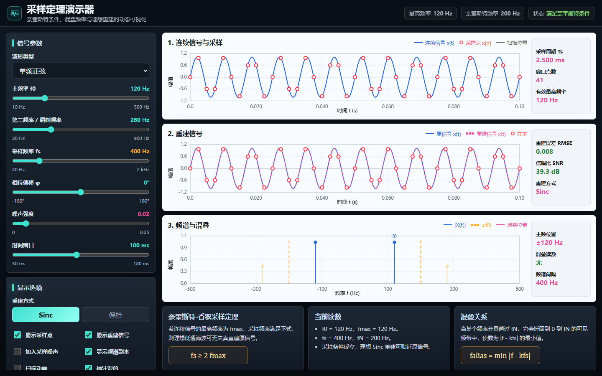
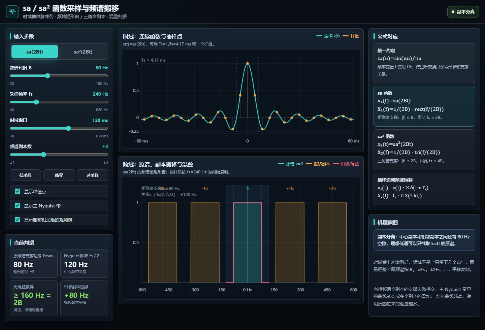
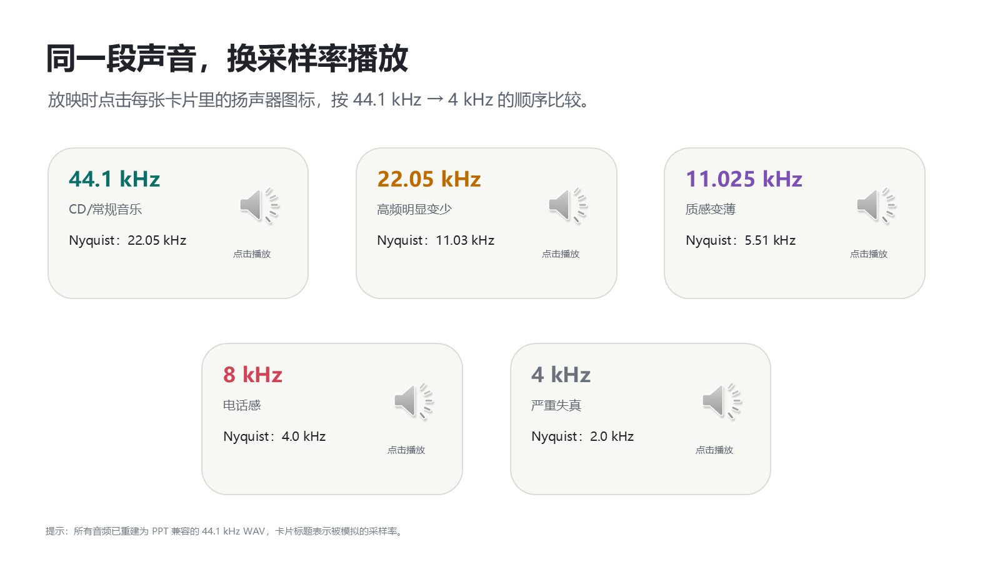
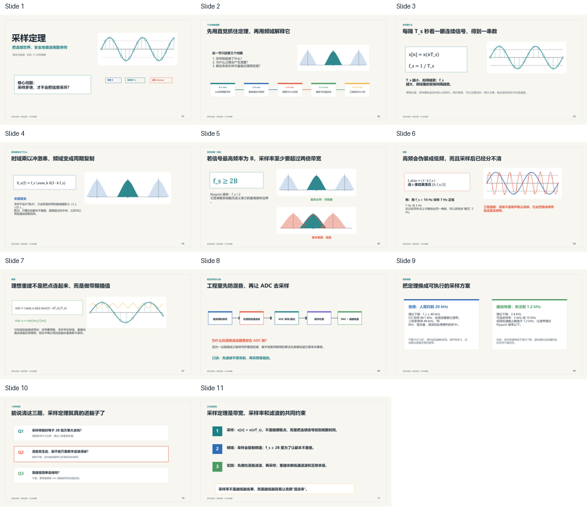

采样、混叠与重建 ↗
拖动采样率，比较 Sinc 插值与零阶保持，观察频谱复制和折回频率。
信号与系统 / 本科课堂
从连续信号的取样，到频谱复制、混叠与重建。用一节 15 分钟微课建立直觉，再用互动实验解释每一个变化。
3 个网页演示 · 5 份课件 · 6 页讲义
下载项目后，双击本页即可离线使用。

Interactive demos
直接在浏览器打开。无需安装，也无需联网。
拖动采样率，比较 Sinc 插值与零阶保持，观察频谱复制和折回频率。

02 / 带宽与支撑切换矩形谱和三角谱，在同一个尺度 B 下比较实际带宽与混叠门限。

03 / 听觉实验比较 44.1 kHz 到 4 kHz 的处理结果，再听 8 kHz 有无抗混叠滤波的区别。
Classroom materials
保留可编辑课件和 Word 讲义，按讲课场景选择。

PPTM 的按钮依赖桌面 PowerPoint 的 VBA 功能。普通浏览器、移动端或不支持宏的演示软件可使用上方网页演示。
A 15-minute lesson
完整操作步骤和临界采样说明见 课堂使用指南 ↗。